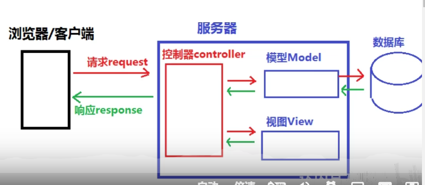

django
## 设计理念
M V C
降低模型间的耦合度

创建项目
django-admin startproject mysite
开始工作：它可以自动创建好项目骨架
项目基本构架
mysite/
manage.py
mysite/
__init__.py
settings.py
urls.py
asgi.py
wsgi.py
这些目录和文件的用处是：
- 最外层的
mysite/根目录只是你项目的容器， 根目录名称对 Django 没有影响，你可以将它重命名为任何你喜欢的名称。 manage.py: 一个让你用各种方式管理 Django 项目的命令行工具。你可以阅读 django-admin 和 manage.py 获取所有manage.py的细节。- 里面一层的
mysite/目录包含你的项目，它是一个纯 Python 包。它的名字就是当你引用它内部任何东西时需要用到的 Python 包名。 (比如mysite.urls). mysite/__init__.py：一个空文件，告诉 Python 这个目录应该被认为是一个 Python 包。如果你是 Python 初学者，阅读官方文档中的 更多关于包的知识。mysite/settings.py：Django 项目的配置文件。如果你想知道这个文件是如何工作的，请查看 Django 配置 了解细节。mysite/urls.py：Django 项目的 URL 声明，就像你网站的“目录”。阅读 URL调度器 文档来获取更多关于 URL 的内容。mysite/asgi.py：作为你的项目的运行在 ASGI 兼容的 Web 服务器上的入口。阅读 如何使用 ASGI 来部署 了解更多细节。mysite/wsgi.py：作为你的项目的运行在 WSGI 兼容的Web服务器上的入口。阅读 如何使用 WSGI 进行部署 了解更多细节。
项目骨架包括了一个项目名的根目录以及一个与项目同名的目录，这个目录包含了项目的基础设置
创建APP（应用）
项目 VS 应用
项目和应用有什么区别？应用是一个专门做某件事的网络应用程序——比如博客系统，或者公共记录的数据库，或者小型的投票程序。项目则是一个网站使用的配置和应用的集合。项目可以包含很多个应用。应用可以被很多个项目使用。
mysite/
manage.py # 项目管理
mysite/
__init__.py
settings.py # 项目设置
urls.py
asgi.py
wsgi.py
# 与manage.py同级
app1/
app2/
polls/
__init__.py
admin.py
apps.py
migrations/
__init__.py
models.py 0. 定义模型
tests.py
urls.py # 1. 指定url的映射
views.py # 2. 返回视图函数
templates/
index.html # 3. 响应模板
static/
style.css
pic.jpeg
setting.py # 0. 项目设置
官方标准结构:一个投票网页polls
mysite/
manage.py
mysite/
__init__.py
settings.py
urls.py
asgi.py
wsgi.py
polls/
__init__.py
admin.py
apps.py
migrations/
__init__.py
0001_initial.py
models.py
static/
polls/
images/
background.gif
style.css
templates/
polls/
detail.html
index.html
results.html
tests.py
urls.py
views.py
templates/
admin/
base_site.html
视图
视图是应用的一部分
views.py
视图函数需要到url里进行注册。
项目管理
manage.py
包含项目管理的子命令
runserver 启动服务
startapp
migrate 数据库迁移
Available subcommands:
[auth]
changepassword
createsuperuser
[contenttypes]
remove_stale_contenttypes
[django]
check
compilemessages
createcachetable
dbshell
diffsettings
dumpdata
flush
inspectdb
loaddata
makemessages
makemigrations
migrate
sendtestemail
shell
showmigrations
sqlflush
sqlmigrate
sqlsequencereset
squashmigrations
startapp
startproject
test
testserver
[sessions]
clearsessions
[staticfiles]
collectstatic
findstatic
runserver
setting.py
包括django所有的配置项
分为公有配置，自定义配置
https://docs.djangoproject.com/zh-hans/3.2/ref/settings/
配置包括：
-
数据库配置
-
时区
- 安装的自带app，例如 django.contrib.admin等
urls.py
uniform resource locator
协议://hostname[:port]/path[?query][#fragment]
APP详解：django.contrib.admin
只需要安装这个app，django就能直接给你提供一个管理页面
- 创建管理员账号
python manage.py createsuperuser
- 将模型加入到管理页面中去
#polls/admin.py
from django.contrib import admin
from .models import Question
admin.site.register(Question)
表单的处理
<form action="{% url 'polls:vote' question.id %}" method="post">
{% csrf_token %}
<input type="submit" value="Vote">
</form>
urls是这样分配的
path('<int:question_id>/vote/', views.vote, name='vote')
自动化测试
（略）
静态文件的管理 django.contrib.staticfiles
如果每个app都带有自己的static，那么放到一个项目中就不方便管理了，这就是这个app的功能，它将各个应用的静态文件（和一些你指明的目录里的文件）统一收集起来，这样一来，在生产环境中，这些文件就会集中在一个便于分发的地方。
配置
# 指定 请求static 的 url
STATIC_URL = '/static/'
# 指定与app无关联的static文件位置
STATICFILES_DIRS = [
BASE_DIR / "static",
'/var/www/static/',
]
# 静态文件的部署位置
STATIC_ROOT = /home/static
# bash django-admin collectstatic
# 将所有的static 文件收集到static— root目录
# 配置nginx服务器 /static 指向 static root 目录
# （这样做的目的就是为了方便部署，以免每个app的静态文件都分散开了）
密码加密
哈希算法
给出明文---》计算出定长的，不可逆的值
md5-32位16进制，sha-256
django的认证系统
django已经提供了很好地User 模型，可以解决绝大多数时候的用户认证情况
from django.contrib.auth.models import User
同时，你也可以根据自己的需求对User进行定制化：
from django.contrib.auth.models import User
class Employee(models.Model):
user = models.OneToOneField(User, on_delete=models.CASCADE)
department = models.CharField(max_length=100)
使用OneToOneField
https://docs.djangoproject.com/en/3.2/topics/auth/customizing/

自带的User所拥有的字段。
对于User对象，可以使用现有的函数进行增删改查以及登陆验证：
https://docs.djangoproject.com/en/3.2/topics/auth/default/
管理静态文件
https://docs.djangoproject.com/zh-hans/3.2/howto/static-files/
-
确保
INSTALLED_APPS包含了django.contrib.staticfiles -
在配置文件中，定义
STATIC_URL，例子:
STATIC_URL = '/static/'
表单 Form
HTML 表单
在HTML中，表单是在 <form>...</form> 中的一些元素，它允许访客做一些类似输入文本、选择选项、操作对象或空间等动作，然后发送这些信息到服务端。
django 处理表单
- 准备并重组数据，以便下一次的渲染
- 为数据创建HTML表单
- 接收并处理客户端提交的表单
django表单
核心：Form 类
例子
前端代码，提交yourname字段
<form action="/your-name/" method="post">
<label for="your_name">Your name: </label>
<input id="your_name" type="text" name="your_name" value="{{ current_name }}">
<input type="submit" value="OK">
</form>
django的处理方法
考虑到一次提交的表单可能非常庞大，所以django使用另一种方式：
#forms.py
from django import forms
class NameForm(forms.Form):
your_name = forms.CharField(label='Your name', max_length=100)
这是一个表单模型，可以直接传到模板中进行渲染，它对应的html是：
<label for="your_name">Your name: </label>
<input id="your_name" type="text" name="your_name" maxlength="100" required>
表单可以直接渲染成html，所以我们的前端就可以省略input部分
<form action="/your-name/" method="post">
{% csrf_token %}
{{ form }}
<input type="submit" value="Submit">
</form>
视图函数的写法：
from django.http import HttpResponseRedirect
from django.shortcuts import render
from .forms import NameForm
def get_name(request):
# if this is a POST request we need to process the form data
if request.method == 'POST':
# create a form instance and populate it with data from the request:
form = NameForm(request.POST)
# check whether it's valid:
if form.is_valid():
# process the data in form.cleaned_data as required
# ...
# redirect to a new URL:
return HttpResponseRedirect('/thanks/')
# if a GET (or any other method) we'll create a blank form
else:
form = NameForm()
return render(request, 'name.html', {'form': form})
form--生成input标签等--->----渲染--->template
post----实例化--->form
个性化表单模板
form渲染是不带，它只包括了
使用 {{form.name_of_field}} 进行分别渲染也可以
使用widget
Form.Field.widget用于指定一个Widget类，使得在渲染该Field的时候，使用该部件。
from django import forms
class CommentForm(forms.Form):
name = forms.CharField()
url = forms.URLField()
comment = forms.CharField(widget=forms.Textarea)
例子：使用markdownx部件时,
from django.forms import forms
from markdownx.fields import MarkdownxFormField
class mdForm(forms.Form):
md = MarkdownxFormField()
对于这个字段，在markdownx中已经定义好了它的widget
class MarkdownxFormField(forms.CharField):
"""
Used in FormFields as a Markdown enabled replacement for ``CharField``.
"""
def __init__(self, *args, **kwargs):
"""
Arguments are similar to Django's default ``CharField``.
See Django's `documentations on CharField`_ for additional information.
.. _docs on Charfield: https://docs.djangoproject.com/en/dev/ref/models/fields/#django.db.models.CharField
"""
super(MarkdownxFormField, self).__init__(*args, **kwargs)
if issubclass(self.widget.__class__, forms.widgets.MultiWidget):
is_markdownx_widget = any(
issubclass(item.__class__, MarkdownxWidget)
for item in getattr(self.widget, 'widgets', list())
)
if not is_markdownx_widget:
self.widget = MarkdownxWidget()
elif not issubclass(self.widget.__class__, MarkdownxWidget):
self.widget = MarkdownxWidget()